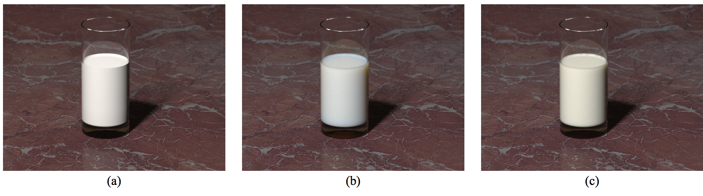

Summary
We will be implementing subsurface scattering based on the
paper here, as well as a new way to generate and record rays so that the end scene can be viewed in a VR viewer.
Background
Subsurface scattering is usually an expensive way to make rendered
meshes of certain types of objects, for example, human skin look much
more realistic and soft instead of looking like a hard plasticky
surface. When using subsurface scattering, translucent objects can be
accurately rendered.
This problem is difficult since to simulate it in the way that it
actually occurs, i.e. the light bouncing around many many times inside
the object, we need either a lot of computing power or a lot of render
time. The linked paper describes multiple types of approximations that
greatly reduce render time, and it is an interesting and challenging
task to fine tune the approximations to look like the true simulated
result that was computed with Monte Carlo integration.
For the VR scene rendering, we will most likely be rendering a sphere
representation that we can show on a Samsung GearVR. This should be a
somewhat trivial task and we will tailor how we take samples from the
sphere to how existing VR photo viewer apps take in photos.
The paper linked in the summary will be helpful to us in our implementation of subsurface scattering.
This website also has many links to examples of subsurface scattering and some more description of it.
Resources
We will be using our own computers to extend the Project 3 (or possibly
4) code. We may try to add optimizations to the raytracer to reduce
render times.
Goals and Deliverables

We intend to acheive results like the one shown above, where the images
of objects with subsurface scattering look believable (like
b and
c
above) instead of hard and plasticky. We will show renderings of (at
least) marble, and most likely translucent plastic. The math in the
paper does seem quite complex but one of us has gotten a start on
understanding it and there are other resources online to help, so this
could be a point of difficulty. If we cannot figure it out ourselves we
will come to office hours and ask about it.
If we have more time to work on stuff and things go well, we would like
to add additional BSDFs such as microfacet, or changing properties of
scattering per depth from the object surface in order to simulate
materials like skin where different layers scatter colors differentlly.
Schedule
In this section you should organize and plan the tasks and subtasks
that your team will execute. Since presentations are 2.5 weeks from the
due-date of the proposal, we recommend that you include a task for
every half week.
4/20 - Understand the relevant math results from the paper that we will need for the implementation, modify
generate_ray to allow creation of samples in a sphere pattern for use with the VR viewer.
4/23 - Get the single scattering term working
4/27 - Have multiple scattering most of the way working
4/30 - Have working subsurface scattering implementation, Start renderings (they will take forever, I'm sure)
Final Presentation Complete